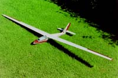

1996, Graupner Foka 4 mit 2,2 m Spannweite, fliegt so schlecht, dass es schon wieder interessant ist.
Mit der Foka als Baukasten sollte mal wieder ein kunstflugfähiges kleineres Modell entstehen. Ein etwas kleineres Modell deshalb, weil Gewicht in der Luft Zeit bzw. Höhe zum beschleunigen braucht, ohne Geschwindigkeit kein Kunstflug - klar oder.
Leider muss man, wenn man hauptsächlich am Hang fliegt und vor einem ein Feuchtgebiet liegt, um jeden Meter Höhe kämpfen. Das gestaltet sich mit diesem Modell zeitweise als nervenaufreibend, da die Maschine in engen Kurven zum Abschmieren neigt.
Im Winter 2004 habe ich dann eine modifizierte Fläche gebaut, die erstens Wölbklappen besitzt, zweitens eine etwas vergrösserte Flügeltiefe am Randbogen besitzt und drittens 1 Grad verschrenkt ist.
Den Plan für die modifizierten Flächen habe ich, wie immer, mit den kostenlosen 2D CAD Programm Solid Edge gezeichnet (Foka4_Fluegel.pdf).